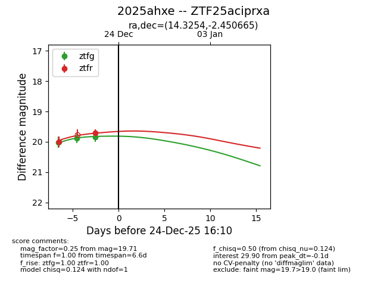
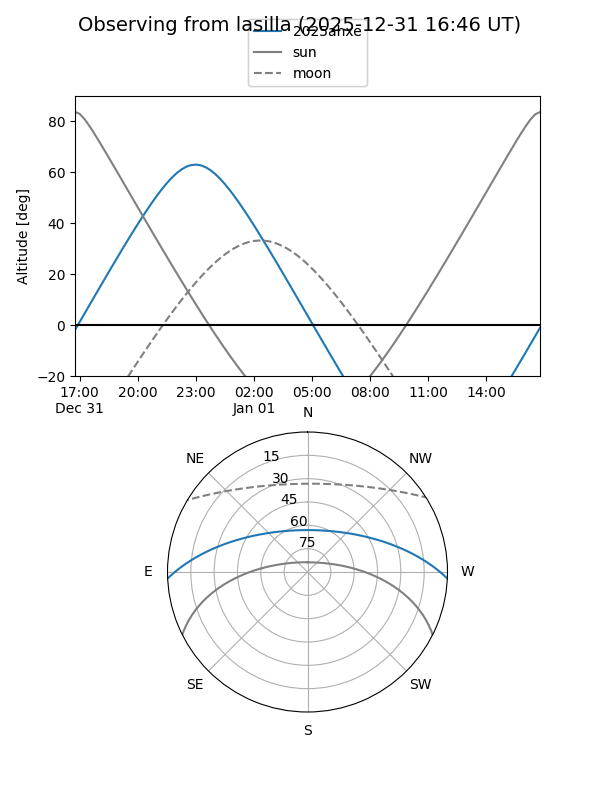
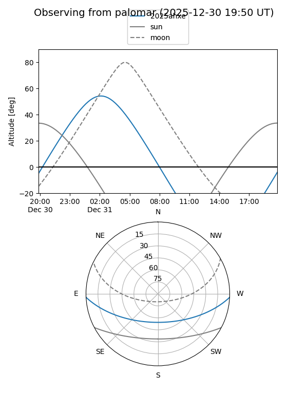

2025ahxe
Target 2025ahxe at 2025-12-31 17:00
Aliases and brokers:
FINK:
Lasair:
ALeRCE:
TNS:
YSE:
alt names
ZTF25aciprxa (ztf,fink_ztf)
2025ahxe (tns,yse)
Coordinates:
equatorial (ra, dec) = 14.3254,-2.45066
equatorial (HMS+DMS) = 00:57:18.09,-02:27:02.39
galactic (l, b) = (126.4363,-65.28251)
Flags:
Photometry:
last ztfg=19.84, ztfr=19.71
3 ztfg, 2 ztfr detections
Lightcurve

Visibility


Additional plots